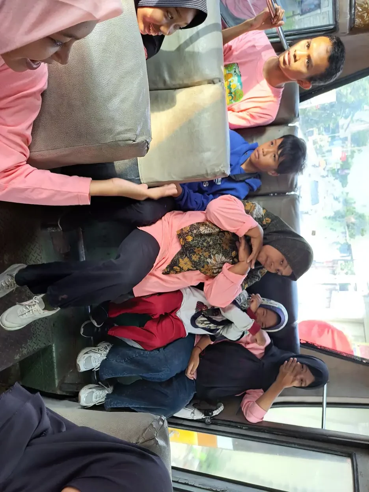

Menerima diagnosis anak berkebutuhan khusus bukan berarti menerima batasan seumur hidup, melainkan memulai proses memahami kebutuhan anak dan mencari dukungan yang tepat. Diagnosis dapat membantu keluarga, sekolah, dan tenaga kesehatan menggunakan bahasa yang sama saat merencanakan asesmen, terapi, pendidikan, dan dukungan sehari-hari.
Reaksi orang tua setelah mendengar diagnosis sangat beragam. Ada yang merasa lega karena akhirnya mendapat penjelasan, ada yang sedih, bingung, marah, takut, atau merasa bersalah. Semua perasaan itu manusiawi. Yang penting, keluarga tidak harus mengambil semua keputusan pada hari yang sama.
Panduan ini membahas langkah yang dapat dilakukan secara bertahap. Diagnosis bukan pengganti pengamatan terhadap anak. Kekuatan, minat, komunikasi, kesehatan, dan suara anak tetap menjadi bagian penting dari setiap rencana.
Daftar Isi
Apa Arti Diagnosis bagi Anak dan Keluarga?
Diagnosis adalah kesimpulan profesional berdasarkan riwayat perkembangan, pengamatan, wawancara, dan alat asesmen yang relevan. Pada beberapa kondisi, prosesnya melibatkan lebih dari satu profesi. Hasil diagnosis seharusnya menjelaskan kebutuhan dukungan, bukan sekadar menempelkan label.
Diagnosis juga bukan ramalan. Dua anak dengan diagnosis yang sama dapat memiliki cara berkomunikasi, kemampuan belajar, profil sensorik, kesehatan, dan kebutuhan bantuan yang sangat berbeda. WHO menekankan bahwa kemampuan dan kebutuhan individu dapat berubah sepanjang hidup. Karena itu, dukungan perlu ditinjau secara berkala.
Orang tua dapat menggunakan diagnosis untuk meminta penyesuaian yang wajar, mencari layanan yang sesuai, dan membantu guru memahami cara terbaik mendampingi anak. Namun, jangan biarkan dokumen diagnosis menjadi satu-satunya gambaran anak. Catatan tentang hal yang anak sukai dan berhasil lakukan sama pentingnya.

Mengelola Emosi Setelah Diagnosis
Berikan ruang bagi diri sendiri untuk mencerna informasi. Keluarga tidak harus langsung terlihat kuat. Berbicara dengan pasangan, anggota keluarga tepercaya, konselor, atau komunitas orang tua dapat membantu mengurangi rasa sendirian. Pilih sumber informasi yang kredibel agar keluarga tidak terjebak pada cerita menakutkan atau klaim terapi yang tidak berdasar.
Rasa bersalah sering muncul, misalnya orang tua bertanya apakah pola asuh, makanan, atau keputusan tertentu menyebabkan kondisi anak. Hindari menyalahkan diri sendiri tanpa dasar. Fokuskan energi pada hal yang dapat dilakukan sekarang, seperti menjaga kesehatan anak, membangun komunikasi, mencatat kebutuhan, dan mencari layanan.
Buat keputusan dalam urutan kecil. Minggu pertama bisa dipakai untuk memahami laporan dan menjadwalkan tindak lanjut. Minggu berikutnya untuk berkomunikasi dengan sekolah. Setelah itu keluarga dapat menata rutinitas rumah. Langkah bertahap lebih realistis daripada mencoba semua program sekaligus.

Langkah Praktis Setelah Diagnosis
- Simpan dokumen: satukan laporan asesmen, resep, hasil pemeriksaan pendengaran dan penglihatan, catatan terapi, serta surat dari sekolah dalam satu folder.
- Buat daftar pertanyaan: tulis hal yang belum dipahami, termasuk arti istilah, pilihan layanan, frekuensi evaluasi, dan tanda yang harus dipantau.
- Catat profil anak: tulis kekuatan, minat, cara berkomunikasi, pemicu stres, rutinitas, keterampilan mandiri, dan tujuan keluarga.
- Periksa kebutuhan dasar: dokter dapat menyarankan evaluasi kesehatan, tidur, nutrisi, pendengaran, penglihatan, atau kondisi lain yang memengaruhi perkembangan.
- Mulai dari prioritas: pilih satu atau dua tujuan yang paling berdampak pada keamanan, komunikasi, kemandirian, atau partisipasi anak.
- Tentukan jadwal tinjauan: pastikan keluarga tahu kapan harus mengevaluasi kemajuan dan siapa yang menjadi kontak utama.
HealthyChildren, sumber edukasi dari American Academy of Pediatrics, menjelaskan bahwa skrining perkembangan melihat beberapa area seperti bahasa, komunikasi, pemecahan masalah, sosial emosional, dan motorik. Pemahaman ini membantu orang tua tidak menunggu masalah membesar sebelum berdiskusi dengan dokter.
Berkomunikasi dengan Anak dan Keluarga
Anak berhak mendapat penjelasan tentang dirinya dengan bahasa yang sesuai. Untuk anak kecil, gunakan contoh sederhana seperti “otakmu belajar dengan cara yang berbeda dan kita akan mencari alat yang membantu”. Untuk remaja, libatkan mereka dalam memilih tujuan, jadwal, dan cara meminta bantuan. Komunikasi tidak harus selalu melalui percakapan lisan.
Gunakan istilah yang menghargai martabat anak. Hindari menyebut anak sebagai masalah, beban, atau diagnosis berjalan. Katakan bahwa kebutuhan dukungan tidak menghapus identitas, minat, dan hak anak. Ketika keluarga besar bertanya, bagikan informasi secukupnya dan tekankan kebutuhan privasi.
UNICEF menyarankan keluarga berfokus pada kemampuan anak. Dalam praktiknya, orang tua dapat memulai dari aktivitas yang anak sukai, lalu menggunakannya untuk melatih komunikasi, giliran, perhatian, kemandirian, atau toleransi terhadap perubahan. Hubungan yang hangat bukan tambahan, tetapi fondasi.
Membangun Tim Dukungan
Tim dukungan dapat berisi dokter, psikolog, terapis, guru, guru pendamping, keluarga, dan anak. Tidak semua anak membutuhkan semua layanan. Pilih berdasarkan tujuan yang jelas. Misalnya, terapi wicara dapat dipertimbangkan untuk komunikasi, terapi okupasi untuk keterampilan fungsional, dan dukungan pendidikan untuk partisipasi di kelas.
Mintalah setiap pihak menjelaskan tujuan, cara mengukur kemajuan, latihan yang dapat dilakukan di rumah, serta kapan rencana akan ditinjau. Hati-hati terhadap layanan yang menjanjikan anak pasti sembuh, meminta biaya besar tanpa tujuan terukur, atau menyalahkan keluarga bila hasil tidak sesuai harapan.
Menyiapkan Pendidikan yang Sesuai
Pilihan sekolah harus mempertimbangkan kebutuhan anak, bukan hanya nama sekolah. Tanyakan ukuran kelas, akses fisik, dukungan komunikasi, penyesuaian tugas, keamanan, layanan kesehatan, dan mekanisme penyelesaian konflik. Sekolah inklusi yang baik tidak hanya menerima pendaftaran, tetapi juga menyiapkan cara agar anak dapat belajar dan berpartisipasi.
Orang tua dapat membawa ringkasan satu halaman yang berisi cara anak berkomunikasi, hal yang menenangkan, pemicu yang perlu dihindari, kekuatan, dan tujuan prioritas. Perbarui ringkasan ketika kebutuhan berubah. Untuk memahami perencanaan belajar, baca program pembelajaran individual dan pendidikan inklusi.

Hal yang Sebaiknya Dihindari
- Membandingkan anak dengan saudara atau anak lain dengan diagnosis yang sama.
- Mengejar semua terapi sekaligus sampai anak kelelahan dan keluarga kehilangan waktu bersama.
- Mengandalkan video testimoni sebagai bukti bahwa suatu metode pasti cocok.
- Menyembunyikan diagnosis dari anak tanpa mempertimbangkan usia dan haknya untuk memahami diri.
- Menganggap sekolah akan memahami kebutuhan anak tanpa komunikasi, dokumen, dan pertemuan yang jelas.
Diagnosis dapat menjadi pintu menuju dukungan, tetapi kualitas hubungan dan keputusan sehari-hari tetap menentukan pengalaman anak. Tinjau kembali apakah layanan membuat anak lebih aman, lebih mampu berkomunikasi, lebih mandiri, atau lebih terlibat.
Dukungan YUKA untuk Keluarga
YUKA mendukung keluarga yang sedang belajar memahami pengertian anak berkebutuhan khusus dan mencari lingkungan belajar yang menghargai perbedaan. Keluarga dapat membaca panduan asesmen ABK, peran orang tua dalam pendidikan inklusi, serta konsep inklusi sosial sebagai bahan diskusi.
Ketika anak membutuhkan dukungan keterampilan, keluarga dapat mempelajari terapi okupasi, terapi wicara, sensori integrasi, terapi bermain, dan jenis terapi untuk anak berkebutuhan khusus. Pilih layanan setelah berdiskusi dengan profesional yang memahami kondisi anak.
FAQ Menerima Diagnosis Anak ABK
Apakah diagnosis ABK berarti masa depan anak sudah ditentukan?
Tidak. Diagnosis membantu menjelaskan pola kebutuhan dan menentukan dukungan, tetapi tidak merangkum seluruh kemampuan, minat, atau masa depan anak. Perkembangan anak dipengaruhi intervensi, lingkungan, kesempatan belajar, kesehatan, dan dukungan keluarga.
Apa yang perlu ditanyakan kepada dokter atau psikolog?
Tanyakan nama kondisi dan tingkat kepastian diagnosis, dasar asesmen, kekuatan anak, kebutuhan prioritas, pemeriksaan lanjutan, pilihan intervensi, risiko bila menunda, dan jadwal evaluasi. Minta ringkasan tertulis agar informasi tidak hilang.
Bolehkah mencari pendapat kedua?
Boleh, terutama bila hasil asesmen belum jelas, kebutuhan anak berubah, atau keluarga ingin memastikan rencana dukungan. Pendapat kedua sebaiknya berasal dari tenaga profesional yang kompeten dan tetap mengutamakan kesinambungan layanan.
Bagaimana menjelaskan diagnosis kepada anak?
Gunakan bahasa sesuai usia dan kemampuan komunikasi. Jelaskan bahwa setiap orang memiliki cara belajar dan kebutuhan yang berbeda, lalu sebutkan dukungan yang akan membantu. Hindari kata-kata yang menakutkan atau menjadikan diagnosis sebagai celaan.
Kapan anak perlu mulai terapi atau intervensi?
Waktu intervensi mengikuti kebutuhan dan rekomendasi profesional. Banyak dukungan dapat dimulai dari aktivitas sehari-hari, komunikasi, pendidikan, dan penguatan keterampilan. Jangan menunggu semua masalah menjadi berat, tetapi hindari terapi yang menjanjikan kesembuhan instan.
Bagaimana memilih sekolah setelah diagnosis?
Pertimbangkan kebutuhan belajar, aksesibilitas, kompetensi guru, dukungan individual, komunikasi dengan keluarga, keamanan, dan kesempatan anak berpartisipasi. Kunjungi sekolah dan tanyakan bagaimana mereka menyesuaikan pembelajaran serta menangani kebutuhan kesehatan atau perilaku.
Sumber Rujukan
Rujukan berikut dipilih karena membahas pemantauan perkembangan, pengasuhan anak disabilitas, dan dukungan berbasis kebutuhan individu:
- AAP HealthyChildren, Assessing Developmental Delays
- UNICEF Parenting, Caring for children with disabilities
- WHO, Autism and individual support needs
Catatan: artikel ini bersifat edukasi dan tidak menggantikan konsultasi dengan tenaga kesehatan atau pendidik profesional.
Catatan agar keluarga tetap bertumbuh
Menerima diagnosis bukan berarti keluarga harus langsung mengubah semua hal dalam satu hari. Pilih satu atau dua prioritas yang paling berdampak, seperti membuat jadwal tidur, memulai terapi yang direkomendasikan, atau menyiapkan komunikasi dengan guru. Perubahan kecil yang stabil biasanya lebih mudah dipertahankan daripada daftar target panjang yang membuat semua orang kelelahan.
Orang tua juga perlu menjaga kesehatan dirinya sendiri. Rasa lelah, sedih, marah, atau bingung tidak otomatis berarti orang tua kurang bersyukur. Carilah dukungan yang aman, baik dari pasangan, keluarga, komunitas orang tua, maupun tenaga profesional. Saat pendamping memiliki ruang untuk beristirahat dan memproses emosi, ia lebih siap memberi respons yang tenang dan konsisten kepada anak.
Setiap anak berkembang dengan pola yang berbeda. Jangan menjadikan cerita keluarga lain sebagai batas kemampuan anak sendiri. Gunakan data observasi, evaluasi profesional, dan perubahan fungsional sehari-hari untuk melihat kemajuan. Rayakan kemampuan yang muncul, termasuk kemampuan meminta bantuan, menunggu giliran, menyampaikan ketidaknyamanan, atau mencoba aktivitas baru. Kemajuan semacam ini penting bagi kualitas hidup anak.
Untuk menjaga komunikasi tetap terarah, buat satu dokumen ringkas berisi profil anak, cara berkomunikasi, pemicu stres, hal yang menenangkan, obat atau kondisi kesehatan yang relevan, serta kontak layanan. Bawa catatan tersebut saat konsultasi dan perbarui ketika ada perubahan. Dokumen ini bukan label baru, melainkan alat agar orang yang mendampingi anak tidak perlu menebak-nebak kebutuhannya. Libatkan anak sejauh ia mampu, termasuk saat memilih kata yang nyaman untuk menjelaskan dirinya.